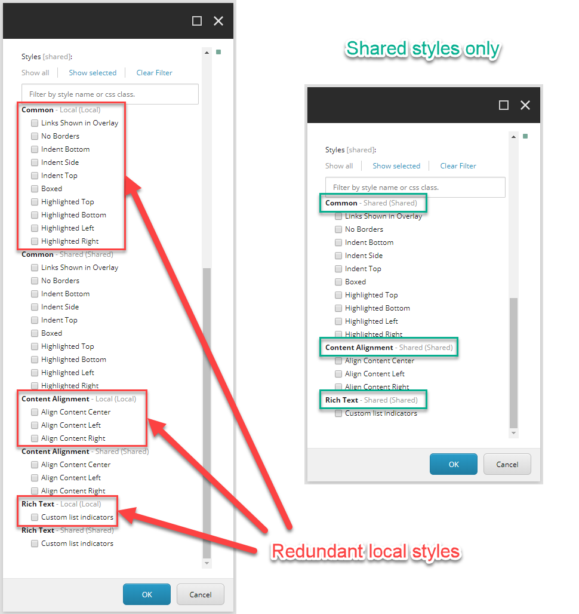
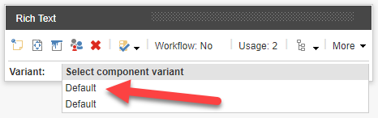

Recommendations: Sharing content
Control content from one central location.
SXA lets you share styles, data sources, page designs, partial designs, and rendering variants between the sites within one site collection.
This topic describes recommendations for sharing content with SXA.
When you decide to mark a site in a site collection as shared, it contributes its styles to all other sites in that site collection. Consider removing redundant styles and use the shared site’s styles instead. Otherwise, your editor is presented with duplicated styles.
|  |
SXA lets you share styles, data sources, page designs, partial designs, and rendering variants between the sites within one site collection. When you decide to mark a site in a site collection as shared, all its rendering variants are made available for all other sites in that site collection. Consider using these rendering variants and remove the redundant versions from other sites. Otherwise, you might end up with duplicated variants presented to your editor.
|  |
When you decide to mark a site in a site collection as shared, all its Page Designs and Partial Designs are made available for all other sites in that site collection. Consider designing them once in the shared site and reusing them in other sites. This practice allows you to manage the designs centrally and automatically publish designs across all sites using them.
SXA provides a functionality to share presentation and data sources between sites in the same site collection. To share pages between websites, consider sharing content as a delegated area. Whenever you have a set of pages that you want to centrally manage but then publish across multiple sites – delegated areas are the way to go. For example, if you want to reuse blog posts from your master site and do not want to have to add every new blog post manually.
If you edit a field in the original item and save it, SXA updates the field in all the cloned items in the delegated area. If you enable the use of the SXA delegated area when you clone items from a master site to a local site, the cloned items are automatically updated and published whenever the original items are.
To speed up rolling out the site you are creating to new regions and users, consider creating a master site that has all the basic functionality and stub content required by new projects. After the site creation, leverage the SXA’s site cloning functionality to speed up the process of the rollout for new users.